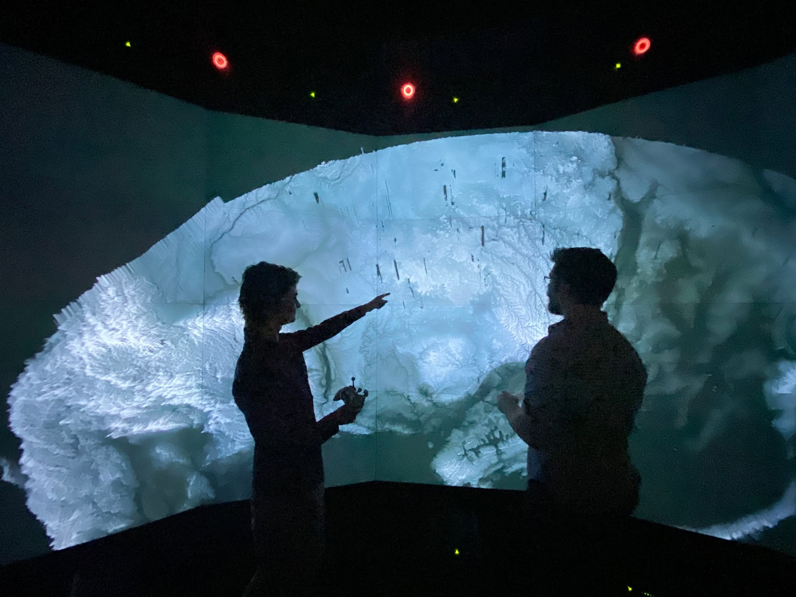

01 / Research & invention
I prototype new ways to create.
My research and engineering span AI-assisted 3D authoring at Autodesk Research, Apple Photos, clinical systems, supercomputer pipelines, and open-source visualization tools. I move between exploratory prototypes and systems used at real scale.
Explore Ytini, used by NASA
AI × 3D3D authoring with AI presenceAutodesk Research · provisional patent
10K usersYtiniScientific Python meets Houdini
15K node-hours/dayBluRendRendering at supercomputer scale
98% of U.S. hospitalsClinical systemsFull-stack engineering at Intelligent Medical Objects